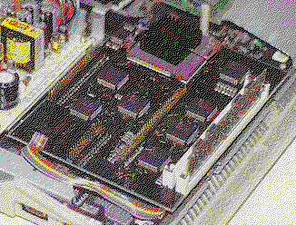

Previous
Next
TOC
Der Afterburner 040
Der Afterburner ist ein Hardware-Beschleuniger speziell für den
Falcon030. Das Board wird auf den internen Erweiterungs-Port des
Falcon030 aufgesteckt und hat eine Größe von ungefähr 16 mal 12 cm
(bei der ersten Platinenversion!). Der Erweiterungsport ist dabei
durchgeführt, sodaß der Anwender eine weitere Karte, z.B. Falcon-
Speed oder Screen-Eye, aufstecken kann. Allerdings ist dieser Turm-
bau nicht besonders ratsam. Das Originalnetzteil des FalconO3O ist
allein mit dem Afterburner schon so stark belastet, daß es eine
weitere Karte nicht mehr versorgen könnte.
Der Afterburner ist mit einem vollwertigen Motorola 68040 Prozessor
(also nicht mit einem LCO4O, der ohne integrierte FPU auskommen muß)
ausgestattet. Der Prozessor wird mit 32 MHz getaktet.
Neben dem Prozessor und einigen Logikschaltkreisen befinden sich noch
zwei P52-SIMM-Sockel auf der Platine. Damit lassen sich bis zu 64 MB
(bei Einsatz von zwei 32 MB-SIMMs) Fast-RAM nachrüsten. Dieses RAM
wird von dem 68040-Prozessor mit voller Geschwindigkeit angesprochen.
Erst dadurch kann der Afterburner seine Qualität in Sachen Geschwin-
digkeit richtig ausspielen. Das zusätzliche Fast-RAM hat keinen Ein-
fluß auf das original RAM, das weiterhin auf dem RAM-Steckplatz des
Falcon verbleibt und ebenfalls eingesetzt werden kann. Um das Fast-
RAM für das System zugänglich zu machen, wird ein Programm im Auto-
ordner benötigt, das den neuen Speicher anmeldet. Zwei weitere Pro-
gramme im Autoordner sorgen dafür, daß die interne FPU und MMU des
68040 korrekt initialisiert werden.
Wer noch über die Afterburner Software von OverScan verfügt, sollte
besser auf das Afterburner Toolkit von Titan Designs UK umsteigen,
da sich mit der OverScan Software nur maximal 16 Megabyte Fastram
ansprechen läßt.
Der Afterburner 040 eingebaut in einem Falcon030

weiterblättern
Kapitel Der Afterburner 040, Seite 1